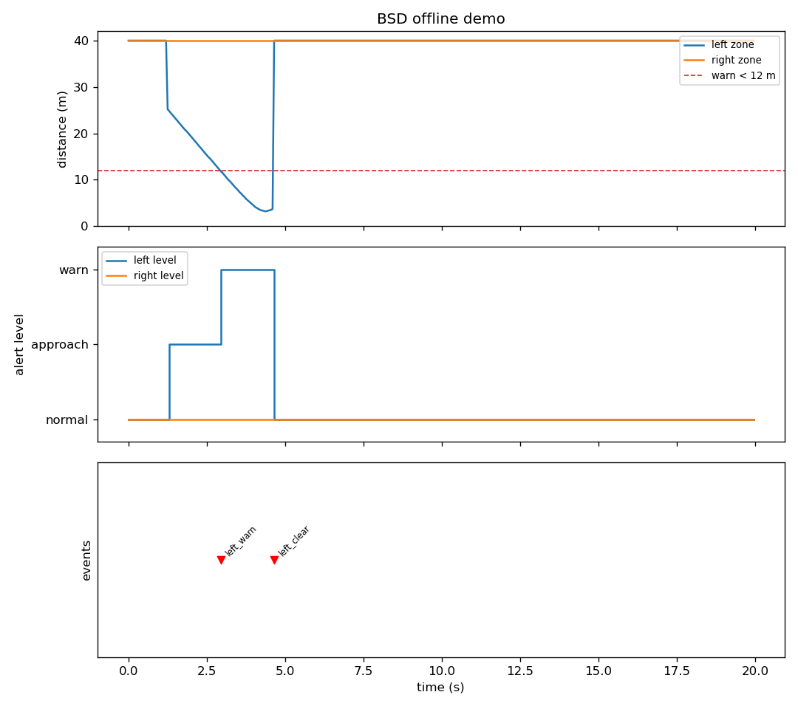
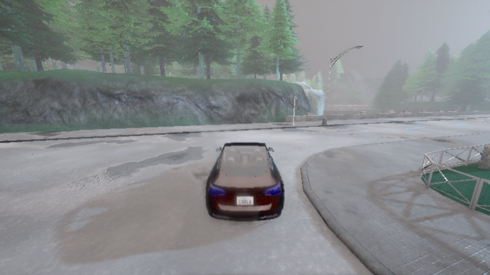
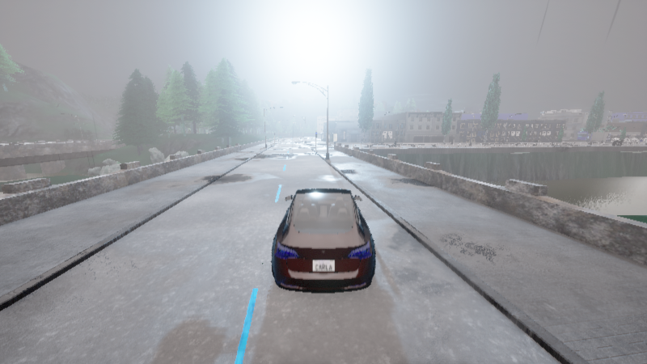
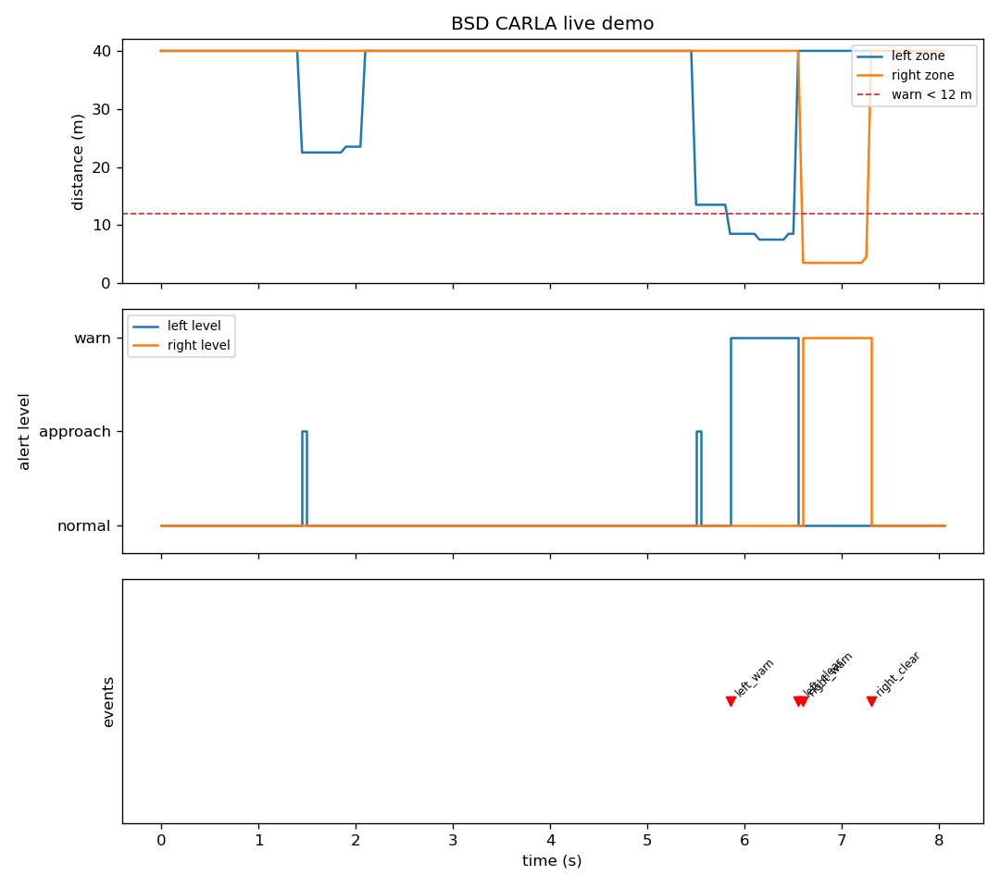

CARLA 盲区监测（BSD）
使用顶置激光雷达按侧别窗口监测相邻车道来车，接近速度差分估计 + 滞回状态机输出分级预警（normal → approach → warn），完整覆盖邻车 从斜后方逼近、穿越盲区、超越离开的全过程。只预警不干预驾驶， 与前向 AEB 模块（
carla_aeb_braking）构成前向制动 + 侧向预警的安全互补。
1. 概述与目标
本模块实现乘用车 BSD（Blind Spot Detection，盲区监测） 功能的完整闭环， 在 CARLA 0.9.16 中可一键复现：
| 环节 | 实现 |
|---|---|
| 感知 | 顶置 64 线 LiDAR → 侧别横向窗口 + 车身高度带滤波 + 径向距离直方图聚类 → 盲区目标距离 |
| 决策 | 左右两条独立滞回状态线（normal/warn）+ approach 提前预警位（与状态解耦） |
| 输出 | 分级预警话题（/bsd/alert）+ 跃迁事件（/bsd/event），只预警不控车 |
代码位于 src/ground/carla_bsd_blind_spot/。
1.1 与仓库中其它地面载具模块的区分
| 模块 | 感知区域 | 算法 | 是否控车 |
|---|---|---|---|
自动紧急制动（carla_aeb_braking） |
前向 | 滞回状态机 + 全力制动 | 是（制动） |
神经网络自适应跟车 ACC（carla_nn_car_following） |
前向相机 | NN 回归油门 | 是（油门） |
| 本模块 | 侧向（左右盲区） | 规则式滞回状态机 + 分级预警 | 否（纯预警） |
BSD 是典型的驾驶员辅助件：只负责把"盲区有车 / 有车正在逼近"及时、 可解释地告知上层，不代替任何驾驶决策。因此本模块的输出是分级预警 （normal/approach/warn）与跃迁事件，而非控制指令——预警阈值全部是显式 参数，40 个离线测试完整覆盖决策逻辑。
1.2 分级预警设计
单一"有车/没车"二值报警在真实场景里有两种失败模式：目标还很远时提前 报警造成骚扰，或目标一进窗口就突然报警失去预判。本模块分两级：
- approach（提前预警）：目标尚在盲区外（d < 25 m）但正以 > 0.5 m/s 快速接近——"有车正在逼近盲区"，变道前提前注意；
- warn（盲区报警）：目标已进入盲区（d < 12 m）——"不建议变道"。
approach 与滞回状态解耦（见 2.2），上层可分别消费：比如 approach 用于 仪表提示、warn 用于方向盘振动或后视镜警示灯。
2. 计算原理
2.1 盲区测距
输入为 CARLA sensor.lidar.ray_cast 的原始点云，解析为 (N,4) 数组
（传感器系：x 前、y 左、z 上），经过三层几何滤波后按径向距离聚类：
原始点云 (N,4)
│ ① 侧别横向窗口：左 y ∈ [2.9, 4.2]（右 y 取负对称）
│ ② 纵向窗口：x ∈ [-25, 2]（斜后方 25 m 到斜前方 2 m）
│ ③ 车身高度带：z ∈ [-1.7, -0.4]（世界高度约 0.3~1.6 m）
▼
按径向距离 r = hypot(x, y) 分 1 m 一箱计数
│ ④ 取"点数 ≥ 6 的最近一箱"的中心作为盲区目标距离
▼
盲区目标距离 d（无目标时返回 40 m 哨兵值）
各层过滤的实测依据（Town01_Opt，LiDAR 装高 2.0 m，探针逐层定位）：
| 过滤层 | 滤掉的杂波 | 实测现象 |
|---|---|---|
| 近界 y ≥ 2.9 | 路缘与路侧灌木 | 路缘 y≈2.4~2.5、灌木 y≈1.8~2.5；不滤会把左侧路缘绿化当成 2.5~12.5 m 盲区目标，自车静止时即假报警 |
| 远界 y ≤ 4.2 | 更外侧低矮植被 | 实测 y≈4.6~4.9、世界高 0.3~0.6 m 的植被带（48+32+32 点连续簇，会被聚类判定为有效目标）；邻车道车身 y≈2.4~4.0 完整保留 |
| 高度带 z ∈ [-1.7, -0.4] | 地面 + 高杆物 | 地面世界 z=0 → 传感器 z≈-2.0；路侧 2 m 标志 → 传感器 z≈0（与 AEB 模块实测一致） |
| 径向聚类 ≥6 点 | 孤立杂波点 | 车身是连续表面（同径向距离多点），杂波是孤立点 |
- 纵向窗口 [-25, 2]：覆盖邻车从斜后方逼近的接近段，与实车 BSD 角雷达 25~60 m 后向探测范围一致；也为 approach 提前预警提供探测纵深。
- 8 帧时间融合：与 AEB 模块相同——64 线雷达对 20 m 外轿车单帧采样 过疏，滑动融合最近 8 帧后稳定可聚类。
2.2 滞回状态机与接近预警
左右盲区各一条独立状态线（滞回防临界抖动）：
| 状态 | 进入条件 | 退出条件 |
|---|---|---|
| normal | — | — |
| warn | d < 12 m | d > 15 m（滞回带 12~15 m 内保持原状态） |
approach 是独立于状态的布尔位：d < 25 m 且 接近速度 > 0.5 m/s。
接近速度由帧间差分估计 ，
首帧无历史时按 0 处理（保守，不提前误报）。
三个设计要点：
- 滞回带：进入 12 m / 退出 15 m——邻车与自车并行时距离在临界值附近 波动，滞回避免报警反复横跳；
- 接近速度门限 0.5 m/s：旁车低速并行时（相对速度≈0）不触发 approach， 只有真正快速逼近才提前预警；
- 左右完全独立：两条状态线、两份测距缓存、事件按侧别命名 （left_warn / right_warn / left_clear / right_clear），同拍多事件合并为 一条逗号分隔消息发布。
2.3 演示场景
demo --live 构造的场景：自车在 Town01 直道定速巡航（内置简单巡航 +
航点跟随车道保持），邻车从左后方 45 m 处以更高速度同向超越——
t≈1.4s 邻车进入 25m 探测纵深，approach 提前预警
t≈5.9s 邻车穿越盲区窗口，left_warn
t≈6.4s 邻车车尾越过自车车头，left_clear
t≈7.0s 道路转弯段，同向邻车变为"右侧逼近"，right_warn
结尾的 right_warn 不是缺陷：道路微弯后，同一辆邻车相对自车的方位从左侧 自然过渡到右侧，恰好完整演示了左右两侧的独立监测。报警瞬间自动截图， 全程导出 CSV 与三行曲线图。
3. 算法流程
离线演示（无需 CARLA）：
合成邻车逼近场景：x_rel(t) = -35 + 8t，落在窗口内时测得径向距离
→ 每 tick：盲区测距 + 接近速度 → BSDController.tick
→ 记录 (t, left_d, right_d, level_left, level_right, event)
→ 导出 CSV + 三行曲线 PNG（距离/分级/事件）
真实场景演示（--live，需 CARLA）：
连 CARLA（同步模式 20 Hz）→ 清理残留 actor → 生成自车 + 顶置 LiDAR
→ 生成邻车（左后方 45 m，油门全开）→ 双车航点跟随车道保持
→ 每 tick：8 帧融合点云 → 左右盲区测距 → 状态机 → 记录 + 截图
→ 导出 CSV + 曲线 PNG（退出前恢复异步模式、销毁 actor）
ROS 2 节点（live 阶段）：
桥接节点：CARLA → /bsd/left_distance、/bsd/right_distance、/bsd/ego_speed
预警节点：订阅距离 → 定时器统一推进左右状态机
→ /bsd/alert（分级 JSON）+ /bsd/event（跃迁事件）
4. 源码解析
| 文件 | 关键符号 | 职责 |
|---|---|---|
bsd_core.py |
parse_lidar_points / blind_zone_distance |
点云解析 + 三层滤波径向聚类测距 |
estimate_closing |
帧间差分接近速度 | |
bsd_decide / BSDController |
滞回状态机单步决策 / 左右独立有状态封装（warn/clear 事件） | |
carla_common.py |
connect / restore_async |
连 CARLA 并开同步模式 / 退出前恢复异步 |
cleanup_actors / spawn_vehicle / make_lidar |
清理残留 actor / 生成自车 / 顶置雷达 | |
bridge_node.py |
BSDBridgeNode |
CARLA↔ROS 桥接：8 帧融合，左右侧别测距发布 |
bsd_node.py |
BSDAlertNode |
纯 ROS 决策节点：定时器统一推进状态机，发布分级预警与事件 |
demo.py |
run_offline / run_live |
离线逼近场景 / 真实邻车超越场景（双车车道保持） |
_lane_keep_steer / _screenshot |
航点跟随转向（自车邻车共用）/ 报警瞬间截图 | |
main.py |
doctor / test / build / demo |
统一入口四个阶段 |
话题一览（ROS 2 模式）：
| 名称 | 类型 | 方向 | 含义 |
|---|---|---|---|
/bsd/left_distance |
std_msgs/Float32 |
桥接 → 预警 | 左盲区目标距离（m，无目标 40） |
/bsd/right_distance |
std_msgs/Float32 |
桥接 → 预警 | 右盲区目标距离（m，无目标 40） |
/bsd/ego_speed |
std_msgs/Float32 |
桥接 → 外部 | 自车速度（m/s） |
/bsd/alert |
std_msgs/String |
预警 → 外部 | 分级 JSON：{"left": "normal/approach/warn", "right": ...}（每拍发布） |
/bsd/event |
std_msgs/String |
预警 → 外部 | 跃迁事件：left_warn / right_warn / left_clear / right_clear（仅变化时，同拍合并逗号分隔） |
5. 仿真运行步骤
5.1 支持与测试环境
| 组件 | 版本 / 说明 |
|---|---|
| 操作系统 | Ubuntu 22.04（ROS 2 Humble，虚拟机）实测；其它 ROS 2 发行版理论可用 |
| 仿真器 | CARLA 0.9.16（服务端运行于有 GPU 的宿主机，-RenderOffScreen 即可） |
| Python | 3.10+（单元测试与离线演示兼容 3.10~3.13，无 ROS 环境自动打桩） |
| 依赖 | numpy；绘图需 matplotlib（缺失时跳过出图，不影响数据导出） |
5.2 从零复现（四步）
# ① 依赖体检 + 离线单元测试（不需要 CARLA 与 ROS）
python3 src/ground/carla_bsd_blind_spot/main.py doctor
python3 src/ground/carla_bsd_blind_spot/main.py test
# ② 离线演示：邻车从左后方 35m 逼近穿越盲区（导出 artifacts/ PNG + CSV）
python3 src/ground/carla_bsd_blind_spot/main.py demo
# ③ 真实 CARLA 演示（--host 填 CARLA 所在机器 IP；邻车自动生成并超越）
python3 src/ground/carla_bsd_blind_spot/main.py demo --live --host 192.168.122.1
# ④ ROS 2 节点方式（colcon 构建后 launch 启动桥接 + 预警两节点）
cd <ros2 工作空间根目录>
colcon build --packages-select carla_bsd_blind_spot
source install/setup.bash
ros2 launch carla_bsd_blind_spot main.launch.py host:=192.168.122.1
# 另开终端观察分级预警：
ros2 topic echo /bsd/alert
demo --live 结束会打印预警拍数与事件时间线，并把截图/CSV/曲线写入
模块 artifacts/ 目录；退出前自动把 CARLA 世界恢复异步模式并清理车辆。
6. 运行效果与性能评价
6.1 离线演示（无需 CARLA）
邻车从左后方 35 m 以 8 m/s 相对速度逼近（x_rel(t) = −35 + 8t）， approach（22.5 m）→ warn（12 m 内）→ clear（超越离窗）完整状态链， 全周期 20 s：

6.2 真实 CARLA 场景（Town01_Opt 实测）
Ubuntu 22.04 虚拟机（ROS 2 Humble）连宿主机 CARLA 0.9.16（offscreen）， 自车 (299.4, 133.2) 定速巡航，邻车左后方 45 m 起步加速超越（双车航点跟随）：



事件时间线实测（CSV 逐帧数据，见 bsd_live_data.csv）：
| 时刻 | 事件 | 左盲区距离 | 说明 |
|---|---|---|---|
| t=0~1.2s | — | 40 m（无目标） | 自车起步，左侧窗口干净（无植被假报警） |
| t=1.45s | approach | 22.5 m | 邻车进入 25 m 探测纵深，提前预警 |
| t=5.85s | left_warn | 8.5 m | 邻车穿越盲区窗口 |
| t=6.55s | left_clear | — | 邻车超越通过，恢复 normal |
| t=6.6s | right_warn | —（右 4.5 m） | 道路转弯段，同向邻车变为右侧逼近 |
| t=7.3s | right_clear | — | 邻车驶离右侧窗口，双侧恢复 normal |
6.3 指标汇总
| 指标 | 离线演示 | CARLA 实测 |
|---|---|---|
| approach 预警 | 22.5 m @ 1.55s | 22.5 m @ 1.45s |
| 盲区报警 | warn 34 拍（1.7s） | left_warn 0.7s → clear |
| 恢复事件 | left_clear @ 4.65s | left_clear @ 6.55s、right_clear @ 7.3s |
| 交叉验证 | — | right_warn（转弯段右侧独立监测） |
| 假报警 | 0（40 拍静止段干净） | 0（静止段与超越段均干净） |
6.4 调优过程记录（实测踩坑）
| 问题 | 现象 | 修正 |
|---|---|---|
| 路缘植被假报警（第一轮） | 自车静止时左侧即报 6.5~12.5 m 目标，真邻车信号被淹没 | 近界 y_near 1.8→2.9，排除 y≈1.8~2.5 的路缘灌木 |
| 外侧植被假报警（第二轮） | y≈4.6~4.9、世界高 0.3~0.6 m 的植被带 48+32+32 点连续簇，仍被聚类为目标 | 远界 y_far 5.0→4.2（探针定位植被带后收缩），邻车道车身完整保留 |
| 自车漂出车道 | 无转向控制时直道缓慢漂移，撞路侧物体后 v=0 | 航点跟随比例转向（瞄向前方 6 m 路点） |
| 邻车跟踪断续 | 邻车 steer=0 在微弯道路漂出侧向窗口，22.5 m 处信号丢失 3 s | 车道保持器泛化，自车邻车共用 |
| approach 永不出现 | 旧窗口纵深仅 10 m，邻车一进窗就已在 warn 区 | 纵向窗口扩到 x∈[-25,2]，与实车 BSD 角雷达探测范围一致 |
| VM 测试失败 | Python 3.10 无 unittest enterContext（3.11 才有） | 改 setUpClass 共享临时目录写法 |
| 事件只报 warn 不报 clear | 核心控制器缺恢复事件 | 补对称的 *_clear 事件，与预警节点语义对齐 |